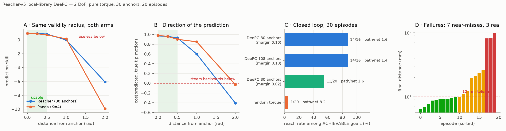
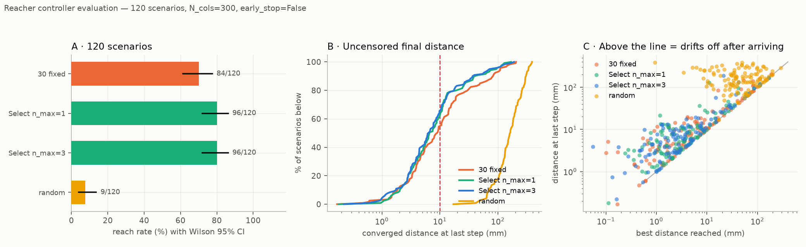
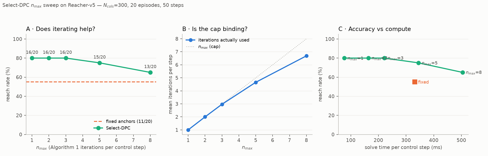
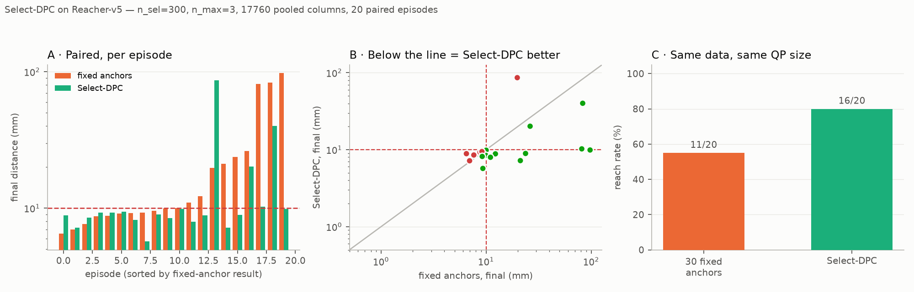

Reacher-v5 reference¶
The third system in this repo: Gymnasium's 2-link planar arm, used as the tractable control for the Panda work. Pure reference — the why is journey 12.
The one-line summary: 2 joints drive a 2-D fingertip, so q → tip is generically
locally invertible and nothing is hidden from the output. That is the property
PandaReach-v0 lacks, and it is why a local-library DeePC that fails on the Panda
succeeds here at a data budget of tens of trajectories rather than ~10⁵.
Two layers: a bare MuJoCo module, and a Gym env on top¶
The classical controllers never touch Gymnasium. reacher/model.py compiles
Gymnasium's own bundled reacher.xml and drives it through the MuJoCo bindings
directly:
from reacher.model import load_model, sample_config, sample_goal, set_state, step_torque, frame_skip
model, data = load_model() # gymnasium/envs/mujoco/assets/reacher.xml
fs = frame_skip(model) # 2 physics steps per control step
rng = np.random.default_rng(0)
q, tip = sample_config(model, data, rng)
goal = sample_goal(rng)
set_state(model, data, q, goal) # writes qpos[0:2] AND qpos[2:4]
ctrl = step_torque(model, data, u, fs)
That module has no observation vector, no reward function and no step()
returning terminated — episodes are driven by the scripts, which own their own
reach criterion (--tol, default 10 mm) and step budget (--steps, default 50,
the Reacher-v5 horizon). It is a control-oriented layer over the model, not an
RL env.
reacher/env.py adds the RL-facing layer on top: Gym ID ReacherGoal-v0,
registered on import reacher, with max_episode_steps=None because the env
truncates itself. It is additive — DeePC and Select-DPC still go through
reacher/model.py, and no classical number moved when it landed. Its signals are
in RL interface below.
Quick orientation¶
All values read off the compiled model, not the XML text.
| Concept | Value |
|---|---|
| Model | reacher.xml, shipped with gymnasium.envs.mujoco (no robot_descriptions fetch, no network) |
nq / nv / nu |
4 / 4 / 2 |
opt.timestep |
0.01 s, frame_skip = 2 → dt_ctrl = 0.02 s, 50 Hz |
qpos[0:2] |
the arm joints — joint0 unlimited (wraps), joint1 ∈ [−3.0, 3.0] |
qpos[2:4] |
the target's x/y slide joints, ± 0.27 — not the arm |
Action u |
ctrl ∈ [−1, 1]², gaintype=FIXED, biastype=NONE, gear=200 → torque = 200·ctrl |
dof_damping / armature |
[1, 1] / [1, 1] |
| Link lengths | 0.10 / 0.11 m → reach 0.21 m |
| Fingertip radius over the hardware range | [0.018, 0.210] m |
| Fingertip radius over the safe box | [0.029, 0.210] m (see below) |
| Goal distribution | uniform in a disc of radius 0.20 — how Reacher-v5 itself draws it |
| Gravity term | zero: planar arm, gravity perpendicular. u = 0 for 50 steps moves the joints by 0.0000 rad |
u = 0 genuinely means hold. Contrast the Panda under torque, where the tip
falls 185 mm in 0.2 s, and the Panda's PD position servo, where the plant's real
input is ctrl, not the commanded delta. Here ctrl is the torque, with
nothing in between.
Three traps¶
qpos[2:4] is the goal¶
The target is part of the simulator state, so "set the goal" means writing into
qpos. Any code that resets qpos wholesale silently moves the target too.
set_state(model, data, q_arm, goal=None) writes the arm block always and the
target block only when a goal is passed, and zeroes qvel — it is a reset, not a
nudge.
SAFE_MARGIN does not port from the Panda¶
panda/model.py trims joint ranges by SAFE_MARGIN = 0.10 to keep excitation off
a hard limit, which would be a nonlinearity the local libraries must model. That
reasoning inverts here: joint1's limit is what lets the arm fold, and folding
is what reaches targets near the origin.
reachable_annulus(model) returns r_min = √(L1² + L2² + 2·L1·L2·cos q1_max):
SAFE_MARGIN |
joint1 limit | reachable annulus | share of the 0.20 m goal disc made impossible |
|---|---|---|---|
0.10 (the Panda's) |
abs(q1) ≤ 2.40 |
[0.0767, 0.21] m |
14.7 % |
0.02 (used here) |
abs(q1) ≤ 2.88 |
[0.0291, 0.21] m |
2.1 % |
At the Panda's margin, one goal in seven is unreachable and reads as controller
failure. is_reachable(model, goal) exists to make that checkable rather than
discoverable — four of twenty goals were unreachable before this was caught.
joint0 wraps, so plain norms lie¶
joint0 is unlimited, so −3.1 and +3.1 rad are 0.08 rad apart, not 6.2.
Every anchor, coverage and library-selection computation must go through
config_distance(q, anchors) (which wraps the first component) or wrap(), never
np.linalg.norm on a raw difference.
A consequence worth knowing: q0 is an exact symmetry of the dynamics
(measured 1.735e-16 m), so a 6 × 5 anchor grid encodes only 5 distinct sets
of dynamics replicated at 6 base rotations. Anchoring on q1 alone and rotating
the fingertip block would remove that 6× redundancy. Untried.
DeePC interface¶
reacher/deepc_setup.py. Signals — what u and y mean to the controller in
general is the DeePC signals section;
this is what Reacher plugs in:
u |
τ ∈ [−1, 1]² — the actuator input, a genuine torque, and the identical signal the RL policies emit as their action |
y |
[q; fingertip] ∈ ℝ⁴ — outputs(q_traj, tip_traj) |
y_ref |
[0, 0, gx, gy] — y_ref_for(goal); the joint block is unweighted, so its value is free |
Q |
diag(0, 0, 1, 1) — tracking cost is fingertip-only |
R |
1.0e-3 · I₂ |
u — 2-D joint torque, m_u = 2¶
u = (τ₀, τ₁) ∈ [−1, 1]², one component per arm joint, written straight into
data.ctrl by step_torque.
- It is a genuine torque.
gaintype=FIXED,biastype=NONE,gear=200, so the applied joint torque is200·uN·m. Nothing sits between the controller's number and the plant. Contrast the Panda, whereuis a delta into a PD position servo and the plant's true input is the post-clipctrl— the distinction that forces twouconventions there and none here. - It is the identical signal the RL policies emit.
ReacherGoal-v0's action space is the same[−1, 1]², so a QP solve and a policy forward pass are interchangeable at the plant boundary. That is what makes the clone, the residual and DeePC comparable at all — see RL interface. u_bounds = (−1, +1)per joint, matching the actuator's ownctrlrange.step_torqueclips to the same box, so the QP bound and the plant agree rather than the bound adding a restriction.du_maxisNone, and nothing is missing. A torque may jump between steps without leaving the region its library describes, and the box is native. The Panda needs a rate limit precisely because itsuis an absolute position target.R = 1.0e-3 · I₂therefore penalizes genuine control effort. Under the Panda's position servo the sameuᵀRupenalized distance fromq = 0— same formula, different meaning, becauseuis a different kind of object there.
y — 4-D, joints stacked on fingertip, p_y = 4¶
y = [q₀, q₁, tip_x, tip_y] = outputs(q_traj, tip_traj): two radians followed by
two metres.
| block | components | units | what it does |
|---|---|---|---|
y[0:2] |
q₀, q₁ |
rad | keys the library, informs prediction — not tracked |
y[2:4] |
tip_x, tip_y |
m | tracked against the goal |
The controller's three jobs for y
land on different blocks here:
- Library selection reads
y[0:2]only.ReacherDeePC._select_index_foroverrides the base class, which keys on a scalar and picks the nearest anchor on a circle — right for a heading, wrong for a 2-D configuration. It usesconfig_distance, which wraps the first component, sincejoint0is unlimited. - The past buffer takes all four. At
T_ini = 5,u_iniis(5, 2)andy_iniis(5, 4). - Tracking sees
y[2:4]only, becauseQ = diag(0, 0, 1, 1).
y_ref = [0, 0, gₓ, g_y]. The joint block's value is arbitrary and never read, its
weight being zero — the zeros are a placeholder, not a target pose. Only the tip
block carries the goal.
Two consequences of putting the fingertip in y rather than a scalar
goal-distance:
- The libraries are goal-free, so one Hankel build serves every target and the
goal enters only through
y_ref. - The joint block makes the state observable through the
Yp/Yfconstraints. On a 2-link armq → tipis already generically invertible, so this earns less here than on the Panda where it was measured; it costs nothing and keeps both setups the same shape.
Shapes at the defaults¶
T_ini = 5, N = 12, T = 1200 samples per anchor, so L = T_ini + N = 17 and
n_cols = T − L + 1 = 1184:
Up |
(T_ini·m_u, n_cols) |
(10, 1184) |
Uf |
(N·m_u, n_cols) |
(24, 1184) |
Yp |
(T_ini·p_y, n_cols) |
(20, 1184) |
Yf |
(N·p_y, n_cols) |
(48, 1184) |
The default 6 × 5 grid gives 30 anchors, hence 30 such libraries. All share
n_cols, since they take turns filling one cached QP's parameters.
τ means two things in this document
Above, u = τ is the joint torque. Under Select-DPC below, τ
is the paper's stacked trajectory vector that column selection scores
against. Different objects; the collision comes from the two papers, not from
this repo.
Excitation carries a restoring term, and it is not optional¶
Under torque the plant is a damped double integrator. Nothing pulls the arm back,
so plain OU torque random-walks away from the anchor and the library ends up
describing wherever it drifted rather than the anchor's neighbourhood.
collect_anchor adds a weak PD toward the anchor — weak enough that the excitation
still dominates the local response, strong enough to keep the walk bounded — and
returns the achieved spread so this can be checked rather than assumed.
| parameter | value | role |
|---|---|---|
OU_THETA |
0.85 |
OU correlation |
OU_SIGMA |
0.35 |
excitation, as a fraction of the ±1 torque range |
K_RET |
0.8 |
restoring gain toward the anchor |
K_DAMP |
0.15 |
velocity damping in the restoring term |
DEFAULT_T |
1200 |
samples per anchor |
y_t is recorded before u_t is applied, so y_{t+1} is the response to
u_t — the alignment every other collection in this repo uses.
Anchors and library selection¶
Anchors sit on a uniform (q0, q1) grid, not k-medoids: in 2-D a grid is
near-optimal for worst-case coverage, and the Panda work established there is no
cluster structure to discover (silhouette flat at 0.23–0.28 for every K). q0 is
periodic, so its samples exclude the duplicate endpoint.
For --grid n0 n1, the grid steps are 2π/n0 in q0 and 5.76/(n1−1) in q1.
The default 6 × 5 gives 30 anchors × T = 1200 = 36 000 samples.
ReacherDeePC overrides _select_index_for because the base class keys on a
scalar and picks the nearest anchor on a circle — right for a heading, wrong for
a 2-D configuration. The key is read straight off y, whose first two components
are q, through the wrapping config_distance.
Controller defaults¶
make_controller(payload, ...) — built once, serves every target via
y_ref_for(goal).
T_ini |
N |
λ_g |
λ_y |
u bounds |
du_max |
solver | |
|---|---|---|---|---|---|---|---|
| default | 5 |
12 |
5e-3 |
7.5e3 |
±1 |
None |
SCS |
predict(...) is the QP-free open-loop gate: regularized least squares on
[Up; Yp; Uf], returning the predicted Yf block. Used by the skill/cos
diagnostics below.
Select-DPC¶
reacher/selectdpc.py is a ~30-line adapter; the algorithm is
core/selectdpc.py, faithful to Algorithm 1 + 2 of
arXiv:2503.18845 and system-agnostic.
trajectory_bank(payload, T_ini, N, stride) pools a deepc_setup collection
payload into a bank.
Reacher needs none of the Panda's corrections: torque is natively bounded to
[−1, 1], so no rate limit is required, and τ stacks torque, radians and metres
whose numeric scales are close enough that the paper's plain norm is reasonable
as-is. The Panda's τ under-weights its tip block ~10×.
Two design parameters, easy to conflate: n_cols (the paper's N_cols, columns
selected per solve, held at 300 throughout) and n_max (the iteration cap).
RL interface — ReacherGoal-v0¶
reacher/env.py. Two RL arms consume it — scripts/train_reacher_vanilla.py and
scripts/train_reacher_residual.py — and they do not see the same observation
vector. The why is journey 13; this is the
contract.
The env itself¶
| Observation | [cos q (2), sin q (2), qvel (2), tip − goal (2)] ∈ ℝ⁸, bounds [±1, ±1, ±50, ±0.5] |
| Action | τ ∈ [−1, 1]² — the same actuator input DeePC drives, so a policy and a QP command the identical plant |
| Reward | −‖tip − goal‖ − 1e-3·τᵀτ + 1.0·[dist < 0.01], dense and unsquared |
| Horizon | max_steps = 50; terminated is always False, only truncated fires |
goal_tolerance |
0.01 m |
Three things the observation's shape encodes:
- Angles enter as
cos/sin, never raw.joint0is unlimited and wraps, so a raw angle is discontinuous at ±π and the policy would see a cliff there — the same fact that forcesconfig_distanceon the DeePC side. qvel's ±50 bound is an observation box, not a physical limit. Torque ×gear = 200exceeds it transiently, sobuild_obsclips into the box rather than the box being widened; an observation outside its declared space silently breaks SB3's normalization and gymnasium's checker.- The goal enters only as
tip − goal. No absolute target coordinates, so the policy is invariant to where in the workspace the episode happens — the analogue of the unicycle's body-frame observation.
The observation is not y. y = [q; fingertip] ∈ ℝ⁴ stays exactly as
deepc_setup defines it and is exposed as a property, so a Select-DPC buffer and
this env's measurement remain the same object. The 8-D vector above is the policy
input and nothing else reads it.
Neither arm is a POMDP. The reward is a function of the applied torque and the
post-step distance, both visible to the agent. Contrast the unicycle
(journey 09), whose Q₂₂δ² term is in absolute
world heading while δ appears nowhere in the body-frame observation — up to 19.7
reward per step unexplainable from the agent's view.
Vanilla — the env, unwrapped¶
SAC on gym.make("ReacherGoal-v0") with only a Monitor around it. No
RescaleObservation, no VecNormalize: the policy consumes the raw 8-D vector
with qvel at its native scale. Evaluation feeds env.unwrapped.build_obs(), the
same raw vector, so training and evaluation agree with each other.
They do not agree with the residual arm, which normalizes. On the unicycle both arms were min-max scaled alike (journey 09); here they are not, and that is an uncontrolled difference between the two arms rather than a measured choice — journey 13's caveat about the residual's ~18× channel compression is the same issue seen from the other side.
Residual — u_base appended, everything normalized¶
reacher/residual_env.py::ResidualSelectEnv wraps the same inner env around a
frozen clone of the base controller.
| Observation | the inner 8 plus the clone's u_base (2) = ℝ¹⁰, min-max mapped to [−1, 1] |
| Action | a_res ∈ [−1, 1]² — a correction, not a torque |
| Applied | u = clip(u_base + residual_frac · half_range · a_res, −1, 1), half_range = 1.0 |
half_range is 1.0 because the torque box is already [−1, 1], so residual_frac
reads directly as the fraction of full authority the policy may add. Normalization
is against the declared bounds, not running statistics — nothing to persist, and
the zero-residual invariant survives it.
Two consequences worth knowing:
- The residual sees history only through
u_base. The clone's features come from aT_ini = 5buffer of(applied u, pre-step y); the residual policy's own observation is memoryless. The buffer slide uses exactly the labelling the clone was trained under, so a zero residual reproduces the clone's closed loop bit-for-bit, andzero_init_actorzeroes the actor's mean head so training starts there. - The
residual_fracdefaults disagree between training and evaluation.train_reacher_residual.pystill defaults to1.0, whileeval_reacher_residual.pyandsweep_reacher_checkpoints.pydefault to2.0. Every residual number in journey 13 is a--residual-frac 2.0run, so pass it explicitly when training or the policy learns against half the authority it is later evaluated with. Frac 1.0 loses to 2.0 on every seed (400k pooled: 578/600 at 3.13 mm against 589/600 at 2.51 mm) — the unicycle's dead-zone lesson, measured again here.
Measured results¶
The validity radius is ~0.5 rad on both arms¶
Open-loop skill and direction quality vs distance from the nearest anchor
(scripts/run_reacher_deepc.py, scripts/verify_libraries.py for the Panda):
| radius (rad) | Panda skill | Reacher skill | Panda cos | Reacher cos |
|---|---|---|---|---|
| 0.00 | 0.93 | 0.94 | 0.98 | 0.97 |
| 0.25 | 0.88 | 0.91 | 0.96 | 0.96 |
| 0.50 | 0.72 | 0.84 | 0.90 | 0.93 |
| 1.00 | 0.14 | −0.02 | 0.85 | 0.60 |
| 2.00 | −9.93 | −6.06 | −0.03 | −0.41 |
Different actuation, different dimensionality, different gravity situation, same boundary. The two systems' outcomes differ only through where they operate.

Closed loop, 120 scenarios¶
Early stopping off, Wilson 95 % intervals (scripts/eval_reacher_scenarios.py):
| controller | reach rate | best | final | steps | path/net | time |
|---|---|---|---|---|---|---|
| 30 fixed anchors | 84/120 [61–77 %] | 4.3 mm | 8.9 mm | 21 | 1.6 | 22.0 m |
Select n_max=1 |
96/120 [72–86 %] | 3.0 mm | 6.6 mm | 16 | 1.5 | 5.5 m |
Select n_max=3 |
96/120 [72–86 %] | 2.8 mm | 6.3 mm | 18 | 1.6 | 16.0 m |
| random torque | 9/120 [4–14 %] | 42.1 mm | 161.7 mm | 20 | 7.6 | — |
The Wilson intervals overlap slightly; the paired tests carry the claim
(n_max=1 closer on 70/120, n_max=3 on 78/120).
Read best and final together. Every controller arrives at roughly half its
final error and then backs off by the same factor (~2.1–2.3×; random 3.8×). There
is no terminal cost and nothing rewards station-keeping, so every reach rate in
this project flatters its controller — they touch the target and leave.

n_max = 1 is the right setting¶
scripts/sweep_select_dpc.py, 20 episodes (fixed anchors: 11/20, 331.9 ms/step):
n_max 1 2 3 5 8
reached 16 16 16 15 13
ms/step 76.7 163.7 221.4 344.8 504.4
iters 1.00 2.00 2.97 4.66 6.69
The entire gain over fixed anchors comes from selecting the right data, not from
Algorithm 1's loop. Beyond n_max = 3 it is strictly dominated — slower and
worse. Iteration buys only precision: n_max=3 converges 0.3 mm tighter at 3× the
cost.


What it looks like¶
Top-down, 0.21 m workspace. The red sphere is the target; the ring around it is the 10 mm reach tolerance, drawn because at 1 cm against a 21 cm workspace a miss and a reach are otherwise indistinguishable.
DeePC vs random torque, same episodes (scripts/record_reacher_video.py):
| DeePC (30 anchors) | random torque | |
|---|---|---|
| reached | ||
| failure |
Fixed anchors vs Select-DPC, same scenarios, early stopping off
(scripts/record_reacher_compare.py). The readout carries both the current and
the best-so-far distance, so a controller that arrives and leaves shows up as the
two numbers separating:
| fixed anchors | Select-DPC | |
|---|---|---|
| rescue fixed misses, Select reaches — where selection earns its keep |
||
| drift largest best-vs-final gap — the failure the reach rate hides |
record_reacher_compare.py also emits both and neither cases, and
record_reacher_video.py a near-miss pair; neither is reproduced here.
Denser anchors bought almost nothing¶
Predicted, then measured: 3.6× the anchors (30 → 108) bought one extra reach, 13/20 → 14/20, while the open-loop gate improved exactly as predicted. Prediction improving without reaching improving is a pattern worth distrusting on sight.
CLI¶
All defaults are baked into argparse; there are no config files.
| script | what it does | key flags |
|---|---|---|
scripts/run_reacher_deepc.py |
the three-stage pipeline: open-loop gate, then closed-loop reaching vs a random-torque control on identical episodes | --grid 6 5 --T 1200 --episodes 20 --steps 50 --tol 0.01 --radii 0 0.25 0.5 1 2 --T-ini 5 --N 12 --lambda-g 5e-3 |
scripts/eval_reacher_scenarios.py |
120 paired scenarios with Wilson intervals and uncensored final distance | --episodes 120 --n-max 1 3 --n-cols 300 --stride 2 --early-stop (off by default) --out docs/reference/reacher_scenarios.png |
scripts/sweep_select_dpc.py |
sweeps n_max; reports reach rate, ms/step and achieved iterations |
--n-max 1 2 3 5 8 --n-cols 300 --episodes 20 --out docs/reference/reacher_nmax_sweep.png |
scripts/run_select_dpc_reacher.py |
Select-DPC vs fixed anchors on the identical 20 episodes, plus figure and videos | --n-sel 300 --n-max 3 --out-dir videos/reacher_select --fig docs/reference/reacher_select_dpc.png |
scripts/record_reacher_video.py |
DeePC vs random torque on the same episodes; supplies the camera, lights and tolerance ring the XML lacks | --scan 20 --fps 25 --size 720 720 --out-dir videos/reacher |
scripts/record_reacher_compare.py |
paired fixed-vs-Select clips, full horizon, showing rescue / drift / both / neither |
--scan 30 --out-dir videos/reacher_compare |
scripts/plot_reacher_results.py |
renders reacher_results.png from reacher_results.csv (transcribed, not recomputed — the closed-loop rows cost ~15 min of QP each) |
--out docs/reference/reacher_results.png |
scripts/train_reacher_vanilla.py |
SAC from scratch on the bare env — the control arm | --steps 200000 --algo sac --lr 3e-4 --seed 0 |
scripts/train_reacher_residual.py |
zero-init SAC residual over the frozen clone | --clone data/dagger_clone_r3.pt --residual-frac 1.0 (pass 2.0 — see above) --steps 200000 |
scripts/eval_reacher_residual.py |
the 5-row table + figure: Select-DPC, clone, clone+residual, vanilla, on 120 shared scenarios | --episodes 120 --residual-frac 2.0 --algo sac |
scripts/record_reacher_dagger.py |
paired BC-vs-DAgger clone clips on the frozen 120, full horizon, picked by outcome: rescue / both / bc_drift / regression / neither |
--scan 120 --bc-clone data/reacher_clone_ml.pt --dagger-clone data/dagger_clone_r3.pt --episode 4 --out-dir videos/reacher_dagger |
scripts/record_reacher_residual.py |
four-arm clips, full horizon, picked by outcome from a scan: rescue / both_succeed / widest_drift plus the residual's own residual_miss and residual_widest_drift |
--scan 120 --residual-frac 2.0 --n-miss 3 --only residual_miss --out-dir videos/reacher_residual_frac2 |
Typical first run:
uv run python scripts/run_reacher_deepc.py --grid 6 5 --episodes 20
uv run python scripts/eval_reacher_scenarios.py
uv run python scripts/sweep_select_dpc.py
How the three systems compare¶
TwoWheelGoal-v0 |
PandaReach-v0 |
Reacher-v5 | |
|---|---|---|---|
| DoF | 3-D state, 2-D input | 7 | 2 |
Does y observe the state? |
yes — y = (x, y, δ) is the state |
no — 4-D self-motion manifold | yes — no redundancy |
| Input | velocities | Δq into a PD position servo (ctrl is the real input) |
torque, directly |
| Gravity | n/a | state-dependent affine term | zero (planar) |
| Dynamics | numpy | MuJoCo | MuJoCo |
| Config-space dimension to cover | n/a | ~5.7 effective | 2 (effectively 1 — q0 is an exact symmetry) |
| Local-library DeePC | works | does not reach — nearest data 1.98 rad away | works, 84/120; Select-DPC 96/120 |
Known caveats¶
N_colsis held at 300 everywhere; the paper sweeps that axis and this repo has not.- Only norm-based selection is implemented. The paper's Isomap variant exists to
dodge the curse of dimensionality in the
(T_ini+N)(m+p)-dimensional trajectory space — 102 here, 289 on the Panda. - One unexplained non-determinism: episode 17 of the Reacher scan scored 19.8 mm in one code path and 184.8 mm in another on identical inputs. Order dependence, episode definition and metric seeding were each ruled out. No aggregate depends on it, but per-episode Reacher classifications are provisional.